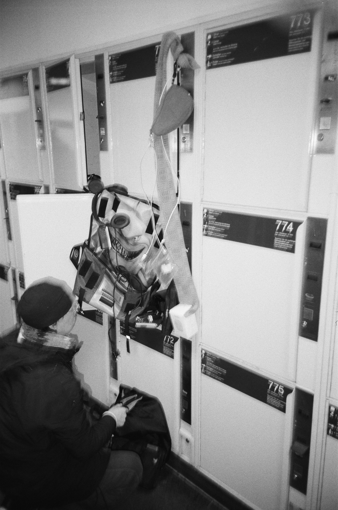
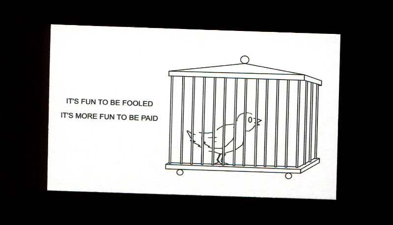
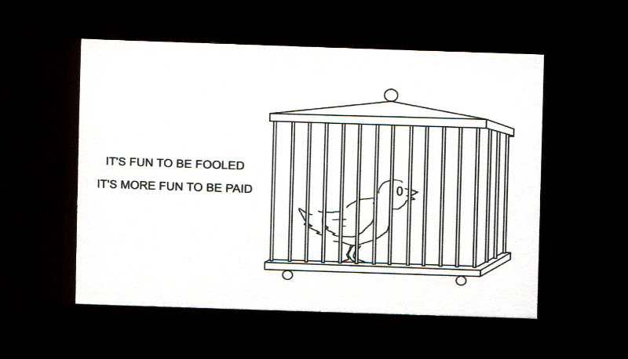
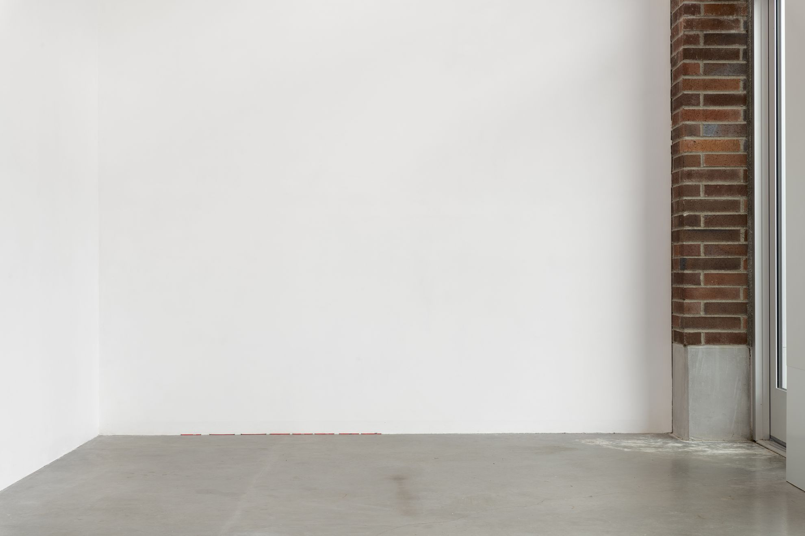

Sean Lockwood Portfolio
Collaborative Projects
2025
- Professional Book Handling
- Decoupling Campaign
- Documentation of One day field work, Berlin by Buku Akiyama (Publication, Forthcoming)
- Paid Audit, at Studio Speziale, Düsseldorf
- Inaugural exhibition, at S.W.E.D.E.N. Gallery, with Lucy Copper, Malmö
2024
2023
- Two Years, at Paid, Seattle
- Discovery! Installation View Flint Jamison Paid 2023
- Student work accompanied by poster, at Soldes, with Steve Kado, Los Angeles
- Resupination Series
2022
- Selections from the Photographic Archive of Kosen Ohtsubo, Presented by Christian Kōun Alborz Oldham, and in cooperation with Kosen Ohtsubo, Ryusei-ha, Empty Gallery, Ensō House, and Kunstverein München series initiation
- Device
- Skiers' Heads Up Display, or Flying Without Tears, at Collision's Craft, Baltimore
- Paid
2020
Professional Book Handling
Professional Book Handling & Authentication Services, Establishing Credibility Through Expert Collection Development, 2025
Decoupling Campaign
Sample images:


Decoupling Campaign
Digital scans of medium format film
Documentation of One day field work, Berlin by Buku Akiyama
Forthcoming photo-documentary print publication to be published by Device
Sample images:

Paid Audit
Two-person exhibition (Nicholas Strobelt & Sean Lockwood):
Paid Audit
Studio Speziale


Negative Ordinal Facetanks (-1st, …, -10th) (left)
Silver gelatin internegative prints


 



Presentation of Released & Unreleased Business Cards
Produced in collaboration with Nicholas Strobelt
Digital/tablet drawings & Graphic Designs on Archival inkjet prints ed. 3
2022 - 2025

Paywall No. 2
Aurora San Miguel, Sean Lockwood, & Nicholas Strobelt
Publication produced on the occasion of the exhibition at Studio Speziale
2023 - 2025
Exhibition text:
Paid was the name of an exhibition space that operated in Seattle, Washington between March 2022 and October 2023. The exhibition space was the garage attached to our home. The building was originally constructed in 1943 and located in the North Beacon Hill neighborhood of south Seattle. Exhibitions took place over two years and programming was funded by surplus income gained by us both while simultaneously employed as full-time technicians for the Photography department at the University of Washington School of Art. During this period artists including focus, Divya Mehra, Elizabeth VR, Christian Oldham, Jason Hirata, Flint Jamison, Park McArthur, and Julia Yerger/Wiley Guillot participated in exhibitions, with multiple performances also held by Elizabeth VR, Kieran Daly, and Charles Stobbs/Neo Gibson. Additionally, we thought it was appropriate to produce our own shows for the space.
For Nick’s show at Paid, he appropriated four institutional slide projectors and additional equipment to display an automatically cycling series of over 30 slides which each show a highly personalized tier list. Tier lists are an online tool for placing items belonging to discrete categories in hierarchical order of favorability. Each slide was produced by photographing digital compositions made intentionally with inverted colors and displayed on a computer screen with 35mm color reversal film, yielding a positive slide. Each projector was controlled by a central controller unit, randomizing the collection to appear across four white screens.
For Sean’s show at Paid, he produced a series of 11 framed silver gelatin prints. The prints were made with found 35mm cinema projection film reel containing the 30 second trailer for Arctic Tale, a 2007 documentary made narrativizing the lives of a family of polar bears. Individual frames were taken from the reel and enlarged in a darkroom to produce paper negatives from the positive film. The paper negatives were then contact printed to make positive prints. Compositions include polar bears in their arctic habitat as well as cinematic intertitles included in the trailer to promote the then upcoming release of the film.
Both projects were made under conditions of excess time and resources at work, and both projects coincidentally interface with a literal negative to positive conversion strategy. For the occasion of producing a show about Paid for Studio Speziale (coincidentally, almost exactly 1.5 years after the final exhibition at Paid and 1.5 years since the most recent exhibition at Studio Speziale), we thought of a gesture that would illustrate a larger narrative of this conversion by revealing our negative intermediary materials, however reconfigured this time directly interfacing with each other. While working on Paid, we constantly communicated over text despite living and working together, often from our separate bedrooms. Our frequent sharing of images started to transform into a practice of producing business cards. In general we always printed a new one for each exhibition at Paid and gave them away for free at the show.
After the first year of working on the space, Aurora San Miguel produced a thorough examination of the work of the artists and our context of Seattle in writing, which we compiled and printed in a small publication called Paywall. After the second year of Paid, Aurora conducted interviews with all of the artists. We intended to release the second issue of Paywall then, in 2023, but our circumstances quickly changed and we both left Seattle immediately after the last show.
March, 2025
Düsseldorf
Remote
Inaugural exhibtion:
with Lucy Copper
S.W.E.D.E.N. Gallery


Remote
Dry lab prints
February, 2025
Malmö
Park McArthur Summer, 2014 2024
A limited edition series of prints made in collaboration with Park McArthur, initialized at the time of Asked Simultaneously, an exhibition at Paid in Seattle that took place from July 29 - August 13 2023.
Edition produced and distributed by Device.

Edition information:
Summer 2014 consists of five photographs authored by the artist previously in 2014 while revisiting blank disabled parking signs she had placed around lower Manhattan. These photographs are printed on Hahnemühle FineArt Baryta Satin paper (300 gsm) and are sized at 4.5 x 5.5" (4x5" printed area with .25" border). Packing and shipping materials are archival.
1 Edition = 5 Prints + 1 COA + 1 Framing instructions
Total production: 12 + III AP
Two editions from the total run are associated with exhibitions:
Ensemble - NYC, NY USA - May 3 - June 15, 2024
Matthew Marks - Los Angeles, CA USA - June 29 - August 17, 2024
(1370 80HE)
Photo series
Featured in group exhibtion:
Black & White International Photography Exhibition, at 独立映像艺术空间 Independent & Image Art Space, Chongqing


(1370 80HE)
Digital scans of medium format film
Two Years
Solo exhibtion:
Two Years
Paid


Ordinal Facetanks (1st, …, 11th)
Gelatin silver contact prints made from copying individual frames from 35mm projection reel of the documentary, Arctic Tale (2007), framed
October, 2023
Seattle, Washington
Discovery! Installation View Flint Jamison Paid 2023
A publication made following the exhibition Installation View produced by Flint Jamison and shown at Paid from March 25 to April 6, 2023.


Colophon:
Flint Jamison
Installation View
Paid
2023
Publishing: Device
Distributing: device.gmbh
Archival Printing: Device
Photographing: Nick Strobelt
Writing: Flint Jamison
Writing: Sean Lockwood
Copy Editing: Katherine Pickard
Designing: Flint Jamison
Laser Engraving: Sean Lockwood
Letterpress Printing: Flint Jamison
Woodcut Printing: Flint Jamison
Edition of 85
24 pages + Cover + Tip-ins + Slip sheets + Baggie
Student work accompanied by poster
Auxilliary exhibtion (Étalage):
for Spring! by Steve Kado
Soldes

Student work accompanied by poster
Two works:
Sean Lockwood
NOTAM of Wind
Video, Selected by Steve Kado
2016
Sean Lockwood
Clouds: A Guide to the Sky poster
Found poster, Selected by Sean Lockwood
2023
2023
Exhibition text:
At the heart of Sean Lockwood’s Student Work Accompanied by Poster, 2023, there is an agreement. The agreement is between Sean Lockwood and Steve Kado, wherein a recently acquired cloud atlas in poster-form (Clouds: A Guide To The Sky, 2023) must be shown as a condition of exhibiting Lockwood’s video from 2016, NOTAM of Wind
The agreement exists because NOTAM of Wind, inspired by a hot air balloon simulator video game[1], was made in an art school context — itself a weird simulation of the reality of working and living as an artist. Lockwood felt that it would only make sense to show the video with some kind of acknowledgment of how different the context was from then to now. The work was made suspended between the poles of antipathy towards ‘making sculpture’ out of metal or wood and fascination with ‘ambient’ or ‘non-inflammatory images like hot air balloons, rainbows and the like.
The “non-inflammatory image” or “ambient image” remains at the core of both the video and the agreement. An ambient image is a picture that exist to show that pictures exist, placeholder or default images, pictures with a wide variety of colors and almost nothing personal or individual — a semiotic dead end. For a time, the hot air balloon was the ruler of this image kingdom. So ingrained was its use that imaging software company Corel used a hot air balloon on all their marketing and ad copy starting in the 80s because no other image could be all images and none more than a hot air balloon.
Perhaps the opposite of the ambient, non-inflammatory image is not the hyper-meaningful, charged and powerful image but the exemplary image, the draft animal of images, images that explain specific useful things: what to do if someone is choking, what plants are poisonous, what to watch out for when observing the weather. Based on the clouds, will it be safe to go up in the hot air balloon?
The placeholder image is changing: there now exists enough easily searchable stock photography that one can always be more precise in who and for what an image is to be used. There are so many images that now everyone can have their own. As such, the image of the hot air balloon is changing from something pleasant, colorful but unremarkable into something that is now gnomic, a gem produced by the great forces unleashed within the volcano of images that has been our 21st century so far.
[1] NOTAM of Wind is itself named after a Japanese hot air balloon simulator game for PlayStation1 made by a company with the unlikely but remarkable name ArtDink.
– Steve Kado
April-May, 2023
Los Angeles, California
Resupination Series


Resupination Series (selections)
Silver gelatin prints, elevator certificate frames
2023
Selections from the Photographic Archive of Kosen Ohtsubo, Presented by Christian Kōun Alborz Oldham, and in cooperation with Kosen Ohtsubo, Ryusei-ha, Empty Gallery, Ensō House, and Kunstverein München
Editioned print series accompanying ongoing exhibition series by Christian Kōun Alborz Oldham, begun in 2022 with four series released through 2025
Device prints and distributes reproductions from the photographic archive of Ikebana master, Kosen Ohtsubo
July, 2022 - Present
Device
Artist printed edition press operated with Nicholas Strobelt

July, 2022 - Present
Seattle, Oakland, San Francisco, Berlin
Skiers' Heads Up Display, or Flying Without Tears
Group exhibtion:
Full Adhesive Transfer
Collision's Craft

Skiers' Heads Up Display, or Flying Without Tears
Found image, digital adhesive print, bus shelter


July, 2022
Baltimore, Maryland
Paid
Exhibition space operated with Nicholas Strobelt
Artists exhibited at Paid (chronological order):
focus, Divya Mehra, Elizabeth VR, Christian Alborz Oldham, Jason Hirata, Nicholas Strobelt, Kieran Daly, Charles Stobbs III & Neo Gibson, Flint Jamison, Park McArthur, Wiley Guillot & Julia Yerger, and Sean Lockwood
March, 2022 - October, 2023
Seattle
Negligence Tort
Solo exhibtion:
Negligence Tort
Veronica Project Space
Vinculum Bulge, Creases, or Returns (rear)
ZPL drawing on thermal shipping labels, paper lollipop sticks

Vinculum Bulge, Creases, or Returns (front, detail)
ZPL drawing on thermal shipping labels, paper lollipop sticks
Vinculum Bulge, Creases, or Returns (front)
ZPL drawing on thermal shipping labels, paper lollipop sticks

Vinculum Bulge, Creases, or Returns (rear, detail)
ZPL drawing on thermal shipping labels, paper lollipop sticks


Various Platen Rollers
Duster can straws with tape, wristwatch crowns/stems

Various Platen Rollers (detail)
Duster can straws with tape, wristwatch crowns/stems
Attract Mode Audit
E-ink display

Attract Mode Audit (detail)
E-ink display
Exhibition text:
PARKING TODAY is circulated free of charge to those who have an interest in the parking industry. In order to facilitate delivery, readers outside North America are charged $60. Post Office receipt available upon request. Single copy price $15.
Manuscripts, articles, photographs, artwork, product releases and all contributed materials are welcomed by PARKING TODAY; however submissions are subject to editing. Advertisers and advertising agencies assume liability for all content (including text, representations and illustrations of advertisements printed and also any and all claims made against the publisher. Publisher's sole responsibility for error in advertising content extends to correction in the succeeding issue.
It’s almost been a year since I subscribed to Parking Today magazine. I’ve learned that the parking industry is concerned with innovations in parking systems and that systems facilitating parking are needed because they support other sites that require parking. I like thinking about parking for this reason—it always points to some other site of interest. It’s appurtenant to other places. After moving a few months ago I was relieved to see issues of the magazine continuing to appear in my mail box. Of course, that’s because I changed my address with the post office for $1.06.
1209 North Orange Street, or the Corporation Trust Center, is a single-story building located in Wilmington, Delaware. Over 50% of publicly traded corporations in the US and 60% of the Fortune 500 are incorporated in this office because of Delaware General Corporation Law (DGCL)—often referred to as the single most important corporate jurisdiction since the beginning of the 20th century. The DGCL allows businesses based in other states to file their taxes in Delaware, whose unusually low corporate tax rate saves major corporations billions in taxes. The office is operated by Corporation Trust Company (CT, or CT Corporation), which is a wholly owned subsidiary of Wolters Kluwer, a multi-national information services company based in the Netherlands with operations in over 35 countries. CT Corporation is the largest registered agent service firm in the world representing hundreds of thousands of business entities worldwide.
Direct-mail solicitation is a common and often lucrative sort of fraud. Over the years, alluring advertisements in newspapers and magazines have proved to be no less rewarding to the people who dream them up. In Mmabas Sfviols, not long ago, someone inserted an ad in a weekly magazine much fancied by photography buffs. They offered Punzaefo210 C cameras for $19.95 at a time when they were normally selling for vastly more. Someone else who doubted that anybody in their right mind would make such a proposal had the good sense to ask the Mmabas Sfviols office of the Postal Inspection Service what it thought of the ad’s validity. Inspector Battery got on the case, and just in time: When he caught up with the originator of this particular scheme, there was no sign of any cameras, but there was $48,631.41 in their bank account and another $23,831.52 in their residence. And within the next few days a flood of mail came in—11,062 letters containing $174,323.10 worth of orders for nonexistent cameras. After all ascertainable claims had been paid off—some of the victims were so eager to get their bargain cameras that they had mailed in cash and neglected to enclose return addresses—there remained $17,018.51, which the Post Office Department conscientiously turned over to the Treasury Department, thus again contributing, in however minuscule way, to a diminution of the national deficit.
February, 2020
Seattle, Washington
Typing Game
Solo exhibtion:
Typing Game
Prairie Underground


Sauna for Keyboards
Installation in decommissioned sauna room using facility materials; fatigue mats, thread/spools, dishwasher rack, employee workstation keyboards; all courtesy of Prairie Underground

Typing of the Dead Logo
Silver gelatin print, framed
Exhibition text:
Language follows clothing. Proper marketing technique dictates to us that products cannot simply exist and be bought--they must also be described. In any commercial context a step of knowing precedes purchasing. In an e-commerce context webpages should be filled appropriately with text here and there to function in the same way as dressing a boutique, stretching to ends of a rectangle as need be. Describing options or variations or suggested pairings or identifying solutions to identified problems requires some form of copy writing or numeric/non-numeric sizing information or color or short or long or style in order to describe the product. During my residency I was able to witness the tools, specifically computer keyboards, used for creating that description.
I've been really into typing games for some time now. I feel like a lot of people associate them with being young in school and learning touch-typing while being told how much of an essential skill it will be. I think it has mostly helped me with messaging comfortably. I like thinking about them more now because of how much they also feel like work simulators. Typing games typically consist of transcribing prescribed passages of text, and the game becomes a matter of copying these passages. Time management also plays a role because there are usually time constraints motivating you to finishing your copying quickly. All of the elements of industrial labor—repetition, accuracy, speed, etc. can be very straightforwardly encapsulated into a game to more or less pass time or feel busy. Games like these can also be an effective gauge for understanding storage solutions. Because the basic mechanic of any typing game hasn't ever needed to change, the same idea can be repackaged over and over again (maybe with slight variations on a theme) as new products. Every update in readable media formats occurring over the last few decades has shown that these kinds of products can be re-shoveled on to whatever tech, never questioning how much longer typing will be necessary. Only now as we see them disappearing from laptops do we see mechanical keyboards getting the final push into the tech fetish category of quirky peripherals. Their continued survival is an in-house chore, left to the domain of appliances whose design integrity will outlast them. Dishwashers can easily clean dust and food crumbs out of keyboards in one cycle.
At Prairie Underground, a once operational sauna fell victim to an illicit supply/demand chain concerning copper one night, rendering it defunct of its original use and relegating it to a storage closet. Since both a dishwasher and a sauna are on site, and because they both heat water to the same temperature when they're working, I wanted to introduce employee keyboards to them. So I went to the building at night, when I knew no one would be at work the next day, and removed employee keyboards from their work stations so that they could spend the following night, of the opening reception, in the sauna.
The playlist I made is for listening to while playing typing games. The music I chose to include in the playlist all comes from other video game soundtracks and is all composed by video game music composers. I tried to encapsulate the energy required to type fast and accurately in the tracks I selected. I eventually burned discs with the music playlist on it. For this I was mostly inspired by the backup of Prairie Underground Operations & Maintenance Manual to a CD.
January, 2020
Seattle, Washington
Statement, 2025:
My primary interests include thorough examination of my relationship to artistic production, evaluation of the larger systems that contextualize my creative labor, and material impact in my social relationships. I'm concerned with decision-making under conditions of partial information, inconsistency of affordance, and the effectual development of property within the role of artist.
Bio:
Sean Lockwood (b. 1994, US) lives/works in Berlin. He received a BFA from the Maryland Institute College of Art in 2016, and an MFA from the University of Washington in 2019. He currently co-operates Device with Nicholas Strobelt, collaborating with artists to produce and distribute printed editions.